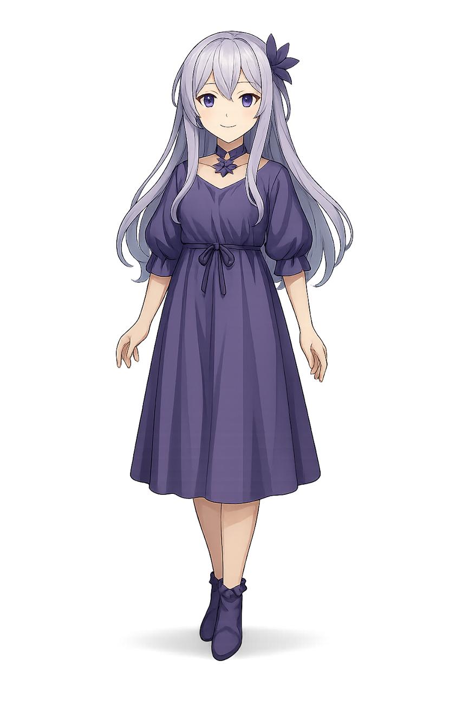

Nos Jeux

Attrape-les-tous
Un jeu d’adresse rythmé et coloré. Change de skin, progresse et entre dans la frénésie Nocturne !

Nocturne Farm
Plonge dans un monde calme où la lumière du crépuscule veille sur ta ferme et tes rêves.